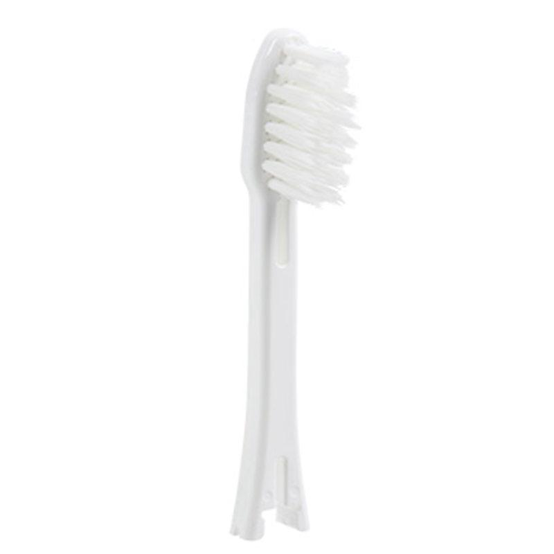

IONPA Home
Końcówka przeznaczona do szczoteczki IONPA Home
Niezwykła szczoteczka, która nie wytwarza hałasu.
Nowość!
IONPA Home
Ionic + Sonic Technology

Najwyższa jakość prosto z Japonii
Technologia Jonowa zwiększa skuteczność nawet o 48%.
Nowość!
IONPA Home
Ionic + Sonic Technology
JAPAN
Najwyższa jakość prosto z Japonii
IONIC
Technologia Jonowa zwiększa skutoczność nawet o 48%.
MANUAL
Niezwykła szczoteczka, która nie wytwarza hałasu.
REPLACEMENT HEADS
Wysokiej jakości wymienne końcówki zapewniają dostosowanie szczoteczki do swoich potrzeb
Końcówka przeznaczona do szczoteczki IONPA Home
Końcówka stworzona dla
osób o
wrażliwych dziąsłach.
Końcówka, która umożliwia fluoryzację zębów.
Końcówka przeznaczona
dla większości
osób.
Końcówka, która umożliwia dotarcie trudno dostępnych miejsc
Wszystko w naturze ma polaryzację opartą na jonach. Płytka nazębna ma ładunek dodatni (+), a powierzchnia zęba ma ładunek ujemny (-). Przeciwne polaryzację są powodem, dla którego powierzchnia zębów przyciąga płytkę nazębną. Powstałe w ten sposób wiązanie jonowe jest skutecznie zrywane za pomocą szczoteczek IONICKISS.
Jonowa szczoteczka do zębów IONICKISS wytwarza jony ujemne i kieruje ich przepływem pomiędzy szczoteczką a zębami, przerywając w ten sposób wiązanie jonowe między nimi. Oddziaływanie jonami ujemnymi odpycha płytkę nazębną z powierzchni zębów w kierunku końcówki szczoteczki. Dzięki czemu zęby stają się czystsze i zdrowsze. Udowodniono klinicznie, że szczoteczka IONICKISS jest znacznie skuteczniejsza niż zwykła szczoteczka manualna.
Dzięki szerokiej gamie produktów IONICKISS Możesz dobrać szczoteczkę do Twoich własnych potrzeb.
Dzięki zastosowaniu technologii Jonowej szczoteczki IONICKISS są skuteczne nawet bez pasty do zębów.
Dzięki codziennemu stosowaniu jonowej szczoteczki do zębów, użytkownik może usunąć znacznie więcej płytki nazębnej niż przy użyciu innych szczoteczek do zębów.
Czerp przyjemność z mycia zębów używając szczoteczki IONICKISS wraz z najbliższymi.